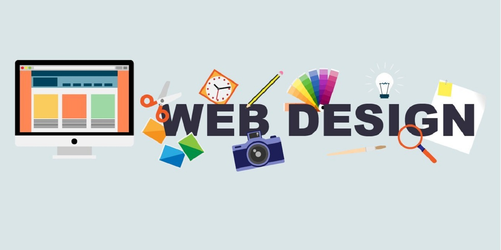
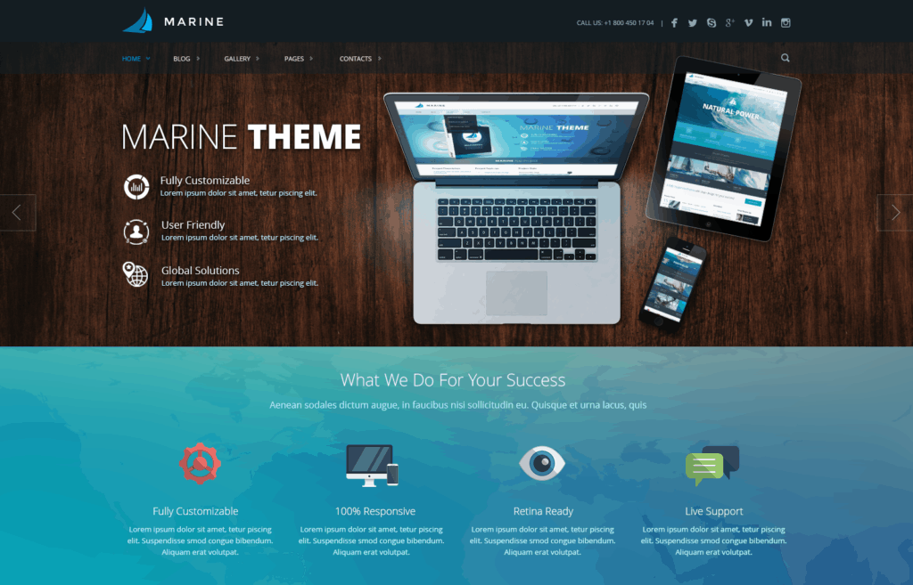

Основи вебдизайну та графіки
Сайт присвячений вивченню основ вебдизайну та графіки у сучасній веброзробці. Тут розглядаються можливості HTML і CSS, а також робота з мультимедіа, Canvas та SVG.
Про тему сайту
Вебдизайн відіграє важливу роль у створенні зручних вебресурсів. Сучасні сайти поєднують у собі текст, графіку та інтерактивні елементи.
Даний сайт демонструє базові підходи до оформлення вебсторінок та використання графічних елементів у вебсередовищі.
Структура сайту
- Головна сторінка — теоретична інформація про вебдизайн та графіку;
- Мультимедіа — приклади використання відео, аудіо, карт та image map;
- Графіка — практичні приклади Canvas та SVG.
Мета та завдання
Метою даного проєкту є ознайомлення з основами вебдизайну та графічних можливостей HTML5 і CSS3.
Основні завдання проєкту:
- вивчення принципів оформлення вебсторінок;
- використання мультимедійних елементів;
- створення графіки за допомогою Canvas;
- застосування векторної графіки SVG;
- формування логічної структури сайту.
UI / UX дизайн
UI (User Interface — користувацький інтерфейс) та UX (User Experience — користувацький досвід) є ключовими складовими сучасного вебдизайну. UI відповідає за зовнішній вигляд вебсторінки: кольори, шрифти, кнопки, іконки та загальне візуальне оформлення інтерфейсу.
UX, у свою чергу, зосереджується на зручності та логіці взаємодії користувача з вебресурсом. Він охоплює структуру сайту, навігацію, зрозумілість розміщення елементів та швидкість доступу до інформації. Добре продуманий UX дозволяє користувачеві легко орієнтуватися на сайті та отримувати позитивний досвід використання.
Поєднання якісного UI та ефективного UX забезпечує створення функціональних, інтуїтивно зрозумілих та візуально привабливих вебінтерфейсів, що відповідають сучасним вимогам веброзробки.

Актуальність теми
Вебдизайн та графіка є невід’ємною частиною сучасної цифрової сфери. Майже кожен вебресурс потребує зручного, зрозумілого та візуально привабливого інтерфейсу для ефективної взаємодії з користувачем.
Сучасні можливості HTML5 та CSS3 дозволяють створювати адаптивні, інтерактивні та мультимедійні вебсторінки, що відповідають вимогам сьогодення.
Основні поняття вебдизайну
- Вебдизайн — проєктування структури та зовнішнього вигляду вебсайтів.
- Графіка — візуальні елементи для подання інформації.
- HTML — мова розмітки вебсторінок.
- CSS — мова стилів для оформлення.
- Canvas та SVG — інструменти для створення графіки.
Можливості, продемонстровані на сайті
Даний вебсайт створений як навчальний проєкт та демонструє практичне використання сучасних вебтехнологій.
- багатосторінкова структура сайту;
- використання мультимедіа (відео, аудіо, карти);
- робота з графікою Canvas та SVG;
- оформлення сторінок за допомогою CSS.
Використані технології
- HTML5 — структура та семантика вебсторінок;
- CSS3 — стилізація та візуальне оформлення;
- JavaScript — робота з Canvas;
- SVG — створення векторної графіки;
- iframe — інтеграція мультимедійного контенту.
Висновок
У результаті виконання даного проєкту я написав багатосторінковий вебсайт, присвячений основам вебдизайну та графіки у сучасній веброзробці. Під час роботи я застосовував основні можливості HTML5 та CSS3 для створення структури, оформлення та адаптивного відображення вебсторінок.
У межах мого сайту реалізовано роботу з мультимедійними елементами, зокрема відео, аудіо та картами. Також було продемонстровано використання графічних технологій Canvas та SVG для створення растрової та векторної графіки.
Отримані знання та практичні навички дозволяють мені наблизитись до створення сучасних, візуально привабливих та функціональних вебресурсів, а також закладають основу для подальшого вивчення вебдизайну й інтерфейсів користувача. Ця робота дозволила закріпити мені навички практично.